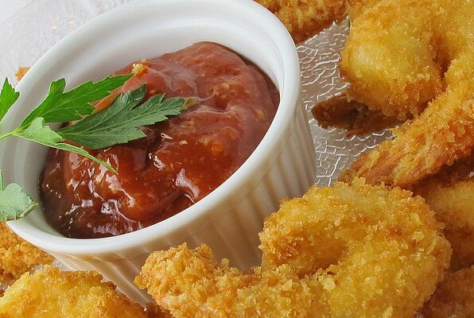

SHRIMP

Description
The panko bread crumbs give these fried shrimp just the right amount of crunch
Ingredients
- 1 pound uncooked jumbo shrimp, peeled and deveined, tails left intact
- ⅓ cup flour
- ¾ teaspoon salt
- ½ teaspoon black pepper
- 3 large eggs large eggs
- 1 ½ cups Kikkoman Panko Bread Crumbs
- 1 cup Vegetable oil (for deep frying)
Steps
- Beat eggs in a medium bowl until frothy. Mix flour, salt and pepper in another medium bowl. Dredge shrimp in flour, shake off excess. Dip shrimp into eggs, then press shrimp into Panko; turn shrimp over and press into Panko again to coat both sides.
- Pour enough oil into heavy large pot to reach depth of 2 inches; heat to 350 degrees F. Working in batches, add shrimp to hot oil; deep-fry until cooked through, about 1 minute. Using tongs transfer shrimp to paper towels to drain. Arrange shrimp on platter. If desired, serve with Kikkoman Tonkatsu Sauce for dipping.